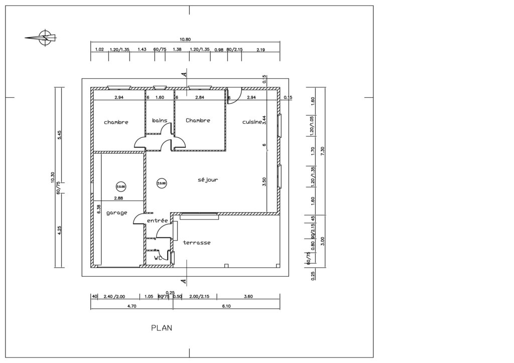
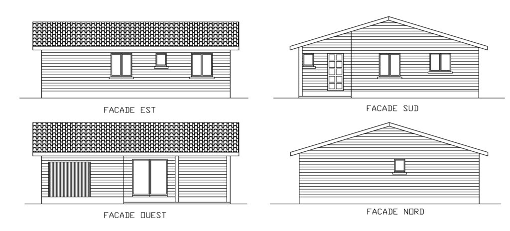

Conception d'une maison réalisée en ossature bois
Permis de construire accepté sur la commune de Léon dans les landes
Réalisation de tous les plans, plans de facades necessaires au dépot du permis de construire.
Le dessin des façades est réalisé en fonction des demandes du client, tout en respectant les obligations architecturales propres à chaques communes.
